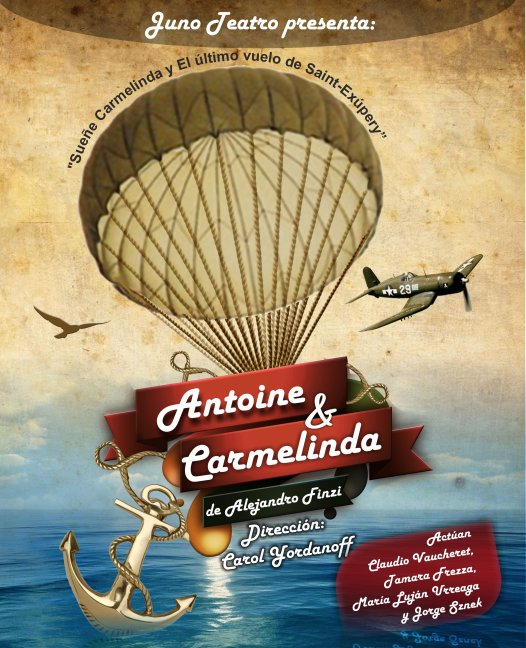

7 de Noviembre función a las 21,30hs en El Zaguán, San Martín 239 de Plottier

"Antoine y Carmelinda" es un espectáculo unitario que contiene dos obras profundamente emparentadas entre sí, "El último vuelo de Saint-Exupery" y "Sueñe Carmelinda" del dramaturgo Alejandro Finzi
Ambas obras ambientadas en la década de 1940, toman como temática central la soledad del ser humano, una desde la perspectiva del hombre y otra desde la mirada de la mujer. Una inmersa en el desierto, y otra encerrada en el abigarrado interior de una sala, ambos están varados. Ambos esperan ser rescatados del olvido y la soledad, de la muerte. Antoine y Carmelinda mientras ansían, mientras esperan, se dan cuenta que están solos: se encuentran cara a cara con sus expectativas y deseos, con la realidad que no los favorece y fabrican entonces sus propios autoengaños para seguir manteniendo la esperanza en la vida.
Carmelinda nació entre las páginas de Finzi. Antoine de Saint-Exupery, piloto de aviones y escritor de "El Principito" y "Vuelo nocturno" desapareció en 1944 durante la segunda guerra mundial mientras realizaba una misión de reconocimiento aéreo.
Agradecimientos: a Fabián y su carpintería, a Claudio Bravo y su herrería, a Virginia Rossi y su caladora, al Chino Fuenzalida, a Chiara Fitzi, a Karina Salvo, a la bordadora Laura Selva Gonzalez y sus manos, a todos los miembros de Juno Cultural y Teatro El Zaguán por su corazón.
Dirección: Carol Yordanoff
Actúan: Claudio Vaucheret, Tamara Frezza, María Luján Urreaga y Jorge Sznek
Voz en off: Alejandro Finzi
Asistencia de dirección: María Alejandra Cortez
Diseño de iluminación: Jesús Esteban Hernandez
Diseño escenográfico: Carol Yordanoff y Julio Sepúlveda
Asistentes de escena y Operación de sonido: Alejandra Cortez y Julio Sepúlveda
Operador/a de de luces: Claudia Brito y Jesús Esteban Hernandez
Diseño de vestuario: Carol Yordanoff
Diseño sonoro: Fernando Barraza y Cecilia Delloro
Realización escenográfica y dibujos: Julio Sepúlveda
Realización de vestuario: Ivana Yordanoff y Silvina Bobato
Realización y asesoramiento de títeres: Silvina Vai
Producción: María de los Ángeles Olguín
Diseño gráfico: Juan José Esteve
Fotos: Mariano Otero